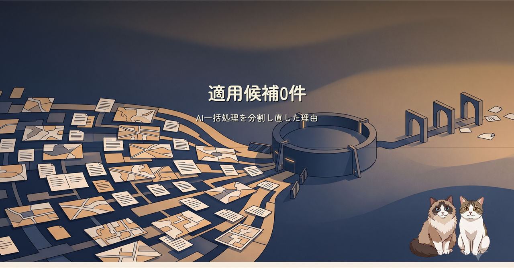
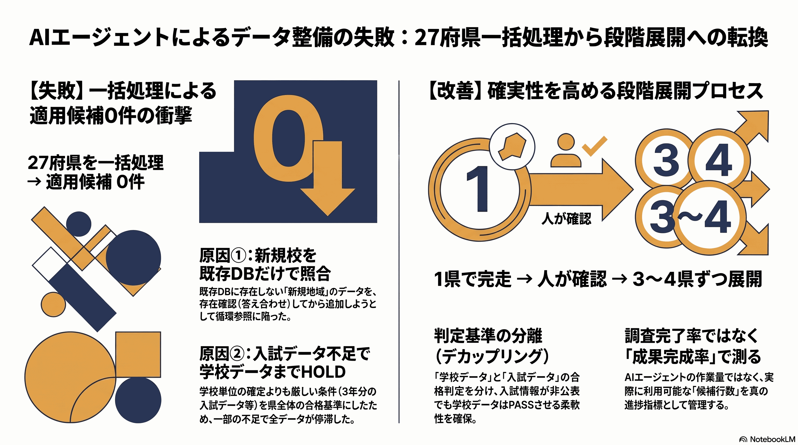
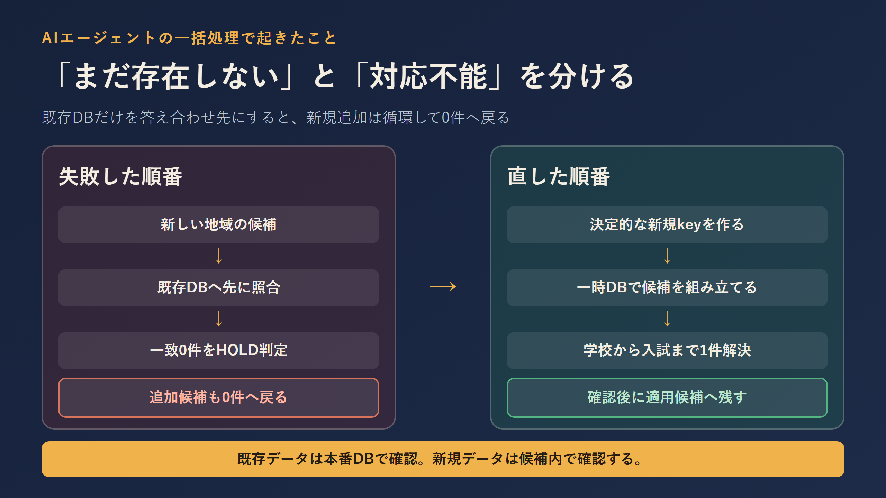

東日本で使えた調査方法と安全策を、西日本27府県へ一括展開しました。工程は完走したのに、適用候補は0件。新規データを既存DBだけで照合した順序の問題と、学校・入試データを一体で止める判定を分解し、1県からの段階展開へ戻しました。
今回の0件は「西日本に学校や公式資料がなかった」という意味ではありません。新しい学校を追加する前に、まだ存在しない本番DBのIDへ照合できることを必須条件にしていたため、追加候補そのものがHOLDへ戻る循環ができていました。
さらに、一部年度の入試指標が非公表だと、確定済みの学校・学科まで県単位で落としていました。改善後は学校データと入試データを別々に判定し、まず1県を一時DBで最後まで通してから、3〜4県ずつ広げます。


関連プロジェクト: manabi-map